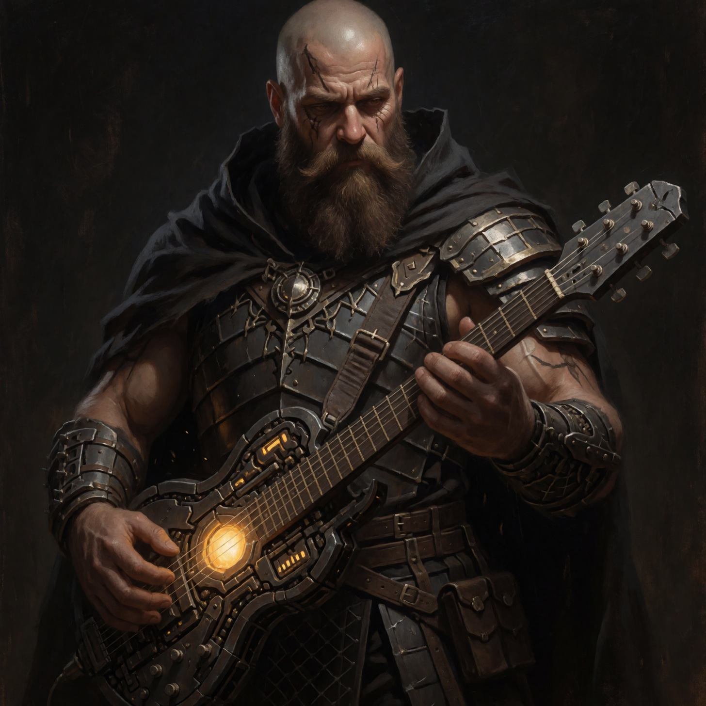

NOTES ISKAREOTUS
Симфонический готик-метал, тяжёлые гитары, хоры и мрачные истории.
TikTok NOTES ISKAREOTUS
NOTES ISKAREOTUS — это твоя темная сторона души.
Это симфонический готик-метал, пропитанный мрачным средневековьем и темным фэнтези. Это история о падших ангелах и восставших демонах, о забытых культах и мрачных писаниях, написанных кровью.
Здесь нет места свету. Только тяжелые риффы, оперный вокал, готические хоры и древние существа, что скрываются в тенях. Каждый трек — это ритуал. Каждый альбом — это страница из запретной книги.
Слушай. Пока твоя тьма не поглотила тебя.
Все опубликованные релизы и страницы исполнителя
Три музыкальных направления, созданных одним независимым автором. У каждого — своё звучание.
Симфонический готик-метал, тяжёлые гитары, хоры и мрачные истории.
TikTok NOTES ISKAREOTUSОккультная электроника, Witch House и ритуальная тёмная эстетика. Пока музыка представлена в TikTok.
TikTok S-HABAS-HСлавянские мифы, фантастические сюжеты и киберпанк. Пока музыка представлена в TikTok.
TikTok FAIRY-TALE LANDПесня по личной истории, музыка для видео или атмосферный саундтрек. Обсудим задачу, подберём звучание и согласуем стоимость до начала работы.
Поздравление, признание, годовщина или необычный музыкальный подарок с личными именами и деталями.
Результат: согласованная версия песни, файл MP3.
Заполнить заявку Обсудить песню в TelegramЗаставка, напряжённый музыкальный фон, джингл или тема для блога, трейлера и короткого видео.
Результат: трек под длительность и настроение проекта. Условия использования согласуем отдельно.
Заполнить заявку Обсудить ролик в TelegramТёмное фэнтези, готика, эпическая битва или звуковой мир для независимой игры и творческого проекта.
Результат: тематическая музыкальная композиция. Объём и права на использование уточняем в брифе.
Заполнить заявку Обсудить саундтрекПослушайте примеры звучания в дискографии NOTES ISKAREOTUS. Для музыкальных заказов возможны и другие жанры — стиль согласуем по вашей задаче.
Для первого сообщения достаточно: кому или для чего музыка · жанр и настроение · примерная длительность · желаемая дата · личное или коммерческое использование.
Важно: музыкальный результат создаётся с использованием инструментов генеративного ИИ. Коммерческое использование, лицензирование и объём прав обсуждаются до оплаты; исключительные авторские права автоматически не обещаются.